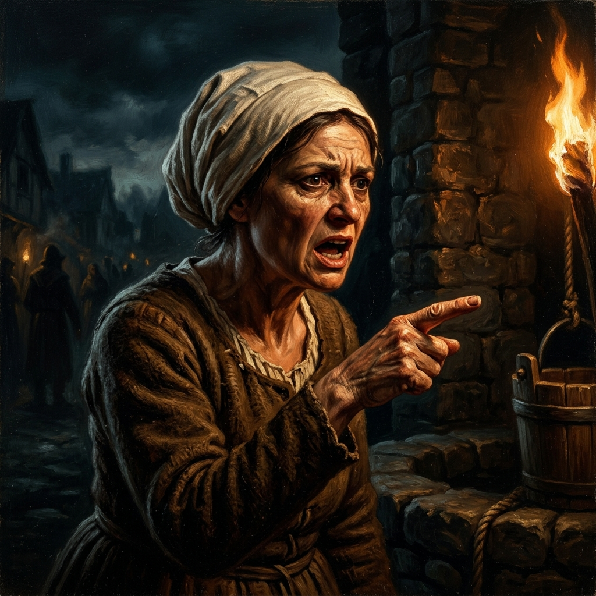
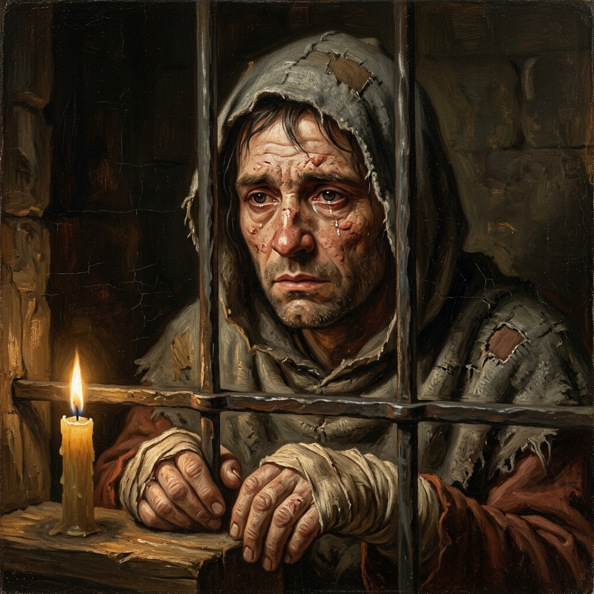

Año del Señor, 1321. Os encontráis en la plaza central de Carcassonne,
al sur del Reino de Francia. El Rey Felipe V os ha encomendado investigar
las acusaciones contra los enfermos de lepra. Se dice que conspiran para
envenenar los pozos del pueblo. Interrogad a los testigos y buscad la verdad
antes de emitir vuestro veredicto.
Testigos Disponibles

Marguerite Duval
Aldeana del pueblo
▸ Pulsa para interrogar
Fray Bernard de Montpellier
Monje franciscano y estudioso
▸ Pulsa para interrogar

Jean "le Malade"
Enfermo de lepra, recluido
▸ Pulsa para interrogar